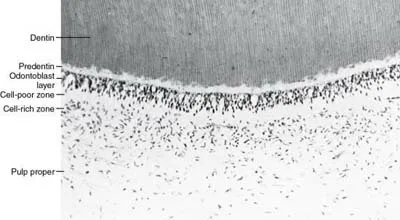

نسخه استخراجشده؛ ترجمه یا تأیید علمی انجام نشده است. وضعیت: captured
پالپ تودهی یکنواخت نیست؛ چهار منطقهی متمایز دارد که از دیوارهی عاجی به سمت مرکز چیده شدهاند:
۱. لایهی ادنتوبلاستی — چسبیده به پرهدنتین، سازندهی عاج.
۲. منطقهی بدون سلول (وایل) — نواری کمسلول که شبکهی عصبی راشکو و مویرگهای زیرادنتوبلاستی از آن میگذرند.
۳. منطقهی پرسلول — انبار واقعی پالپ: فیبروبلاست، سلول بنیادی مزانشیمی و سلولهای ایمنی مقیم.
۴. مغز پالپ — عروق و اعصاب اصلی.
نکتهای که اغلب از قلم میافتد: دو منطقهی میانی در پالپ تاجی برجستهاند و در پالپ ریشهای بسیار کمرنگ. یعنی ظرفیت دفاع و ترمیم پالپ در تاج بیشتر از ریشه است.

ادنتوبلاست سلولی پسمیتوزی است: تقسیم نمیشود. هر ادنتوبلاستی که بمیرد، برای همیشه رفته است.
ادنتوبلاستها با اتصالات شکافی به هم وصلاند تا ترشح هماهنگ شود و پرهدنتین یکنواخت ساخته شود. در بخش آپیکالی سلول اتصالات محکم وجود دارد که نفوذپذیری کل لایه را کنترل میکند — و تراش حفره این اتصالات را میگسلد و نفوذپذیری عاج را بالا میبرد.
اما پالپ بنبست نیست: سلولهای بنیادی مزانشیمی منطقهی پرسلول به سلولهای ادنتوبلاستمانند تمایز مییابند و عاج ترمیمی میسازند — نامنظمتر، کملولهتر و ضعیفتر از عاج اصلی، ولی یک سد.
نوع سؤال: ساخت کلمه · 6 خانه
حروف منبع: ل · س · پ · ر · و · ل